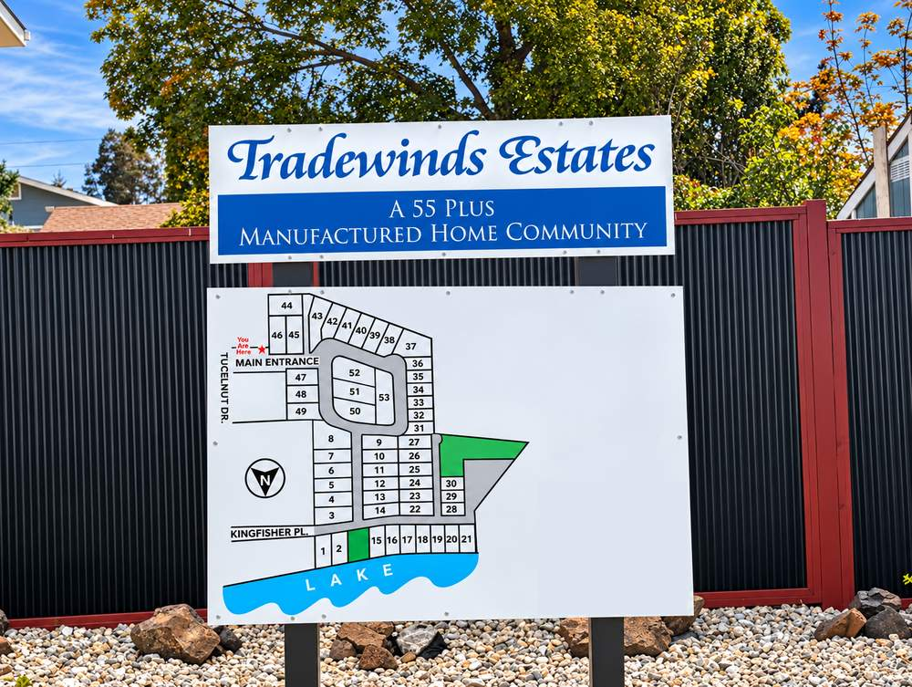
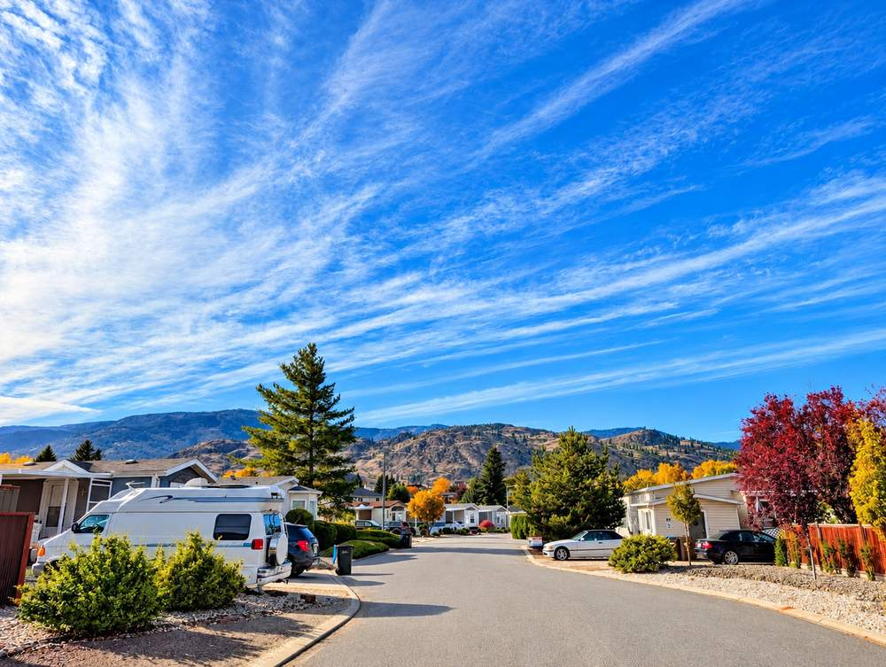
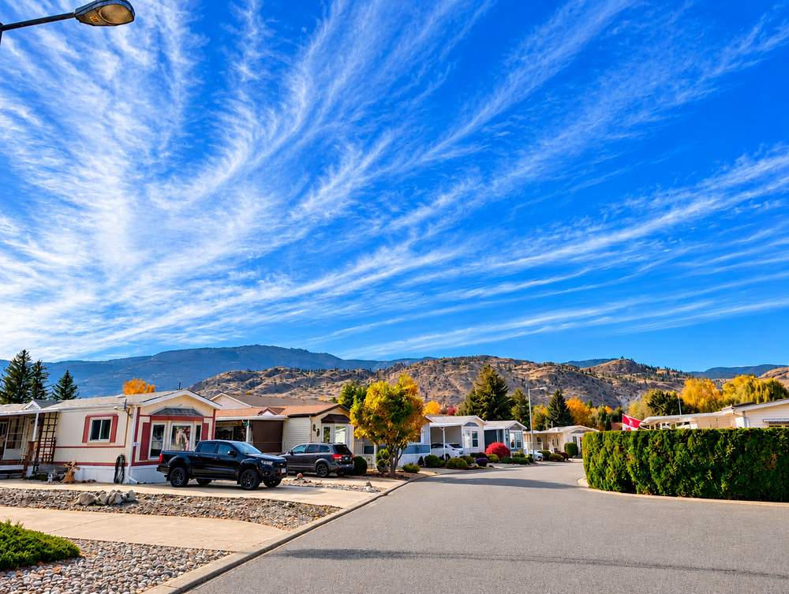
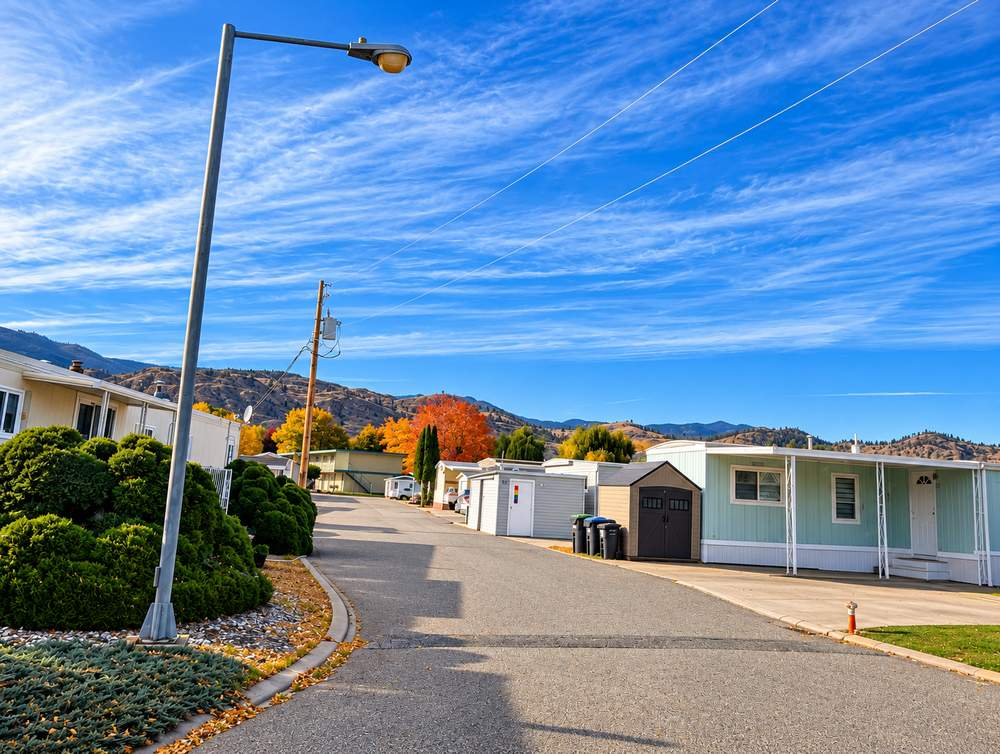
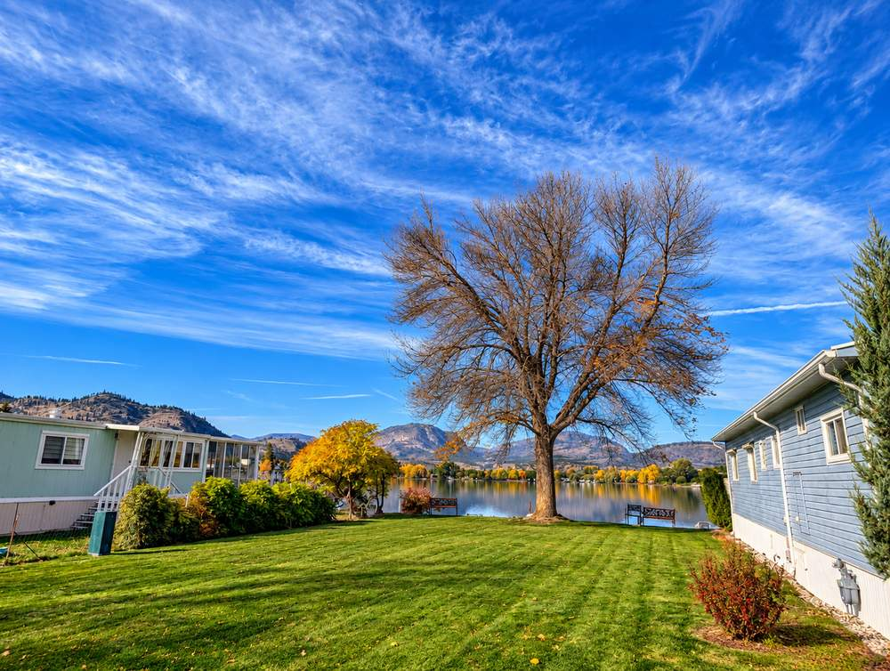

Manufactured homes on rented pads on Tucelnuit Drive, beside the lake with the golf course across the street, per MLS® listings.
Tradewinds Estates is an established 55+ park of manufactured homes with gravel landscaping, carports and mature trees. Here is what it looks like on the ground and what buyers should confirm before an offer.
Availability changes daily; ask Pat what is on the market now. Lease terms, fees and rules can change; confirm them in the documents.
Photos taken on site by Pat, then colour-enhanced, so the sky and landscaping look more vivid than they do in person. Captions describe only what is visible.





Tradewinds Estates suits buyers aged 55 and over who want a lower-cost manufactured home near the lake and the golf course, and who are comfortable owning a home on rented land.
That is the key point. At Sunningdale Estates, also on Tucelnuit Drive, MLS® listings describe a bare land strata where owners hold title to their lots. Here you own the home but rent the pad, so the park’s rules, rent increases and tenancy terms matter as much as the home.
MLS® listings place the park beside Tucelnuit Lake with the golf course across the street.
You typically own the home but rent the pad, so the park’s rules, rent increases and tenancy terms shape your costs and your resale. Ask for the tenancy agreement and park rules before you write an offer, and have your lawyer explain what you would be buying.
Listings differ on both the amount and the inclusions. Get the current rate, the increase history for the last few years and a written list of what the rent includes, such as water, sewer, garbage and snow removal.
The entrance sign says 55+. Confirm how the age rule applies to a spouse, partner or future owner, and read the rules on pets, rentals, vehicles, additions and sheds.
Listings place the park on Tucelnuit Lake and one mentions private beach access. Ask which homes have a lake view or frontage, who may use the shoreline, and how high water is handled.
Many homes here are older, so ask about the roof, electrical, plumbing, hot water tank, skirting, and any additions or sheds. A manufactured home inspection is not the same as a site-built inspection; use an inspector who knows them.
Lenders and insurers can be more cautious with older manufactured homes on rented pads, and cash purchases are common. Check financing and insurance before you remove conditions.
With a construction and project-management background, Pat can walk a Tradewinds Estates home with you and flag roof, mechanical, addition and structural concerns before you commit, and help you read the park’s rules and tenancy terms.
Pat’s free manufactured home guide covers pad leases, financing, inspections and the questions to ask before buying a home on a rented pad. Read the guide →
Availability changes daily. Pat can tell you what is for sale now and pull sold comparables for any home you are considering.
Facts marked “per MLS® listings” come from listing remarks and fields and may differ by home or date. Verify pad rent, rules and tenancy terms with the park; ask Pat for specifics.
Yes, per the entrance sign, which reads “A 55 Plus Manufactured Home Community”, and per MLS® listings. How the rule applies to a spouse, partner or future buyer is set by the park’s rules, so get it in writing before you write an offer.
Tradewinds Estates is on Tucelnuit Drive in Oliver, BC (listings give 6778 Tucelnuit Drive). MLS® listings describe it as beside Tucelnuit Lake with the Nk’Mip Canyon Desert Golf Course across the street.
In a manufactured home park you typically own the home and rent the pad it sits on. Your right to stay comes from your tenancy terms, not from title to the land, so the park’s rules, rent increases and tenancy terms shape your costs and your resale.
MLS® listings give different pictures: one recent listing states a current pad rent in the range of roughly $700 to $800 a month, and another says pad rent includes water and sewer. Rent can change, so get the current amount, the increase history and a written list of what is included from the park.
MLS® listings describe the park as on the shores of Tucelnuit Lake, and one listing mentions private beach access for residents. Pat’s photos show the lake from between homes. Ask the park who may use the shoreline and what the rules are.
Listing wording is not consistent: some listings do not mention pets or rentals and one says neither is allowed. Ask the park for the current rules in writing before you decide.
Pat’s photos show older single-wide and double-wide manufactured homes with gravel landscaping, carports and sheds. One recent listing was a home from around 1980 with updates to the roof, electrical and plumbing. Age and condition vary by home, so an inspection by someone experienced with manufactured homes matters.
A 55+ community of one-level ranchers on Tucelnuit Drive, described in MLS® listings as a bare land strata.
A 55+ bare land strata north of Oliver at Gallagher Lake, per MLS® listings.
Pat’s overview of Oliver as a place to live and buy.
Pat can help you get the tenancy agreement and park rules, pull sold comparables, walk a home with you and let you know when one comes available.
Talk to PatAll Communities →